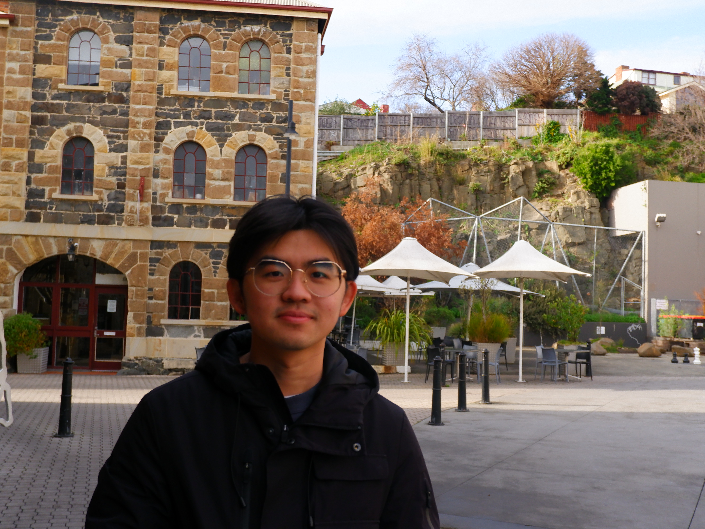

Hao
(August) Xu
I develop machine learning methods for understanding long-form video, with a focus on multimodal learning, temporal modelling, video summarisation, event detection, object tracking, and self- and semi-supervised learning.

Understanding complex events in long-form video.
I am a PhD candidate at Deakin University, supervised by Associate Professor Sunil Aryal. My research lies at the intersection of computer vision and multimodal machine learning, with a particular focus on video understanding. I develop models that identify and localise important events in long-form video, while exploring how visual, audio, and language information can be effectively combined to support richer temporal understanding.
My broader interests include video-language models, temporal localisation, video summarisation, multimodal reasoning, event detection, and efficient learning from limited annotations.
I have also worked with industry research teams, including Dolby Laboratories, on multimodal video understanding and automated highlight detection.
Research interests
Vision-Language Models
Exploring vision-language models for long-form video understanding, with a focus on efficient frame selection, temporal reasoning, and grounding language queries in video.
Multimodal Video Understanding
Learning representations from visual, audio, and language signals to better understand complex temporal events in video.
Video Summarisation
Identifying informative and important moments from long-form videos using multimodal and context-aware models.
Self- & Semi-Supervised Learning
Developing learning strategies that leverage limited labelled data and large-scale unlabelled video to learn robust and generalisable representations.
Selected research
Temporal Feature Distillation for Label-Efficient Precise Event Spotting
Multi-Focus Temporal Shifting for Precise Event Spotting in Sports Videos
Audio for Sports Highlight Detection: A Comparative Empirical Study
TOTNet: Occlusion-Aware Temporal Tracking for Robust Ball Detection in Sports Videos
Research & industry
Dolby Laboratories
Researched multimodal video understanding and automated highlight detection for long-form video using visual, audio, and language representations.
Deakin University
Researching video understanding, multimodal learning, temporal modelling, video summarisation, and event detection.
Agriculture Victoria
Developed research software and web-based tools supporting agricultural R&D workflows.
NIO
Worked on software testing and engineering infrastructure using Python and automated testing tools.
Let's connect.
I am interested in research collaborations and opportunities in video understanding, computer vision, and multimodal machine learning.